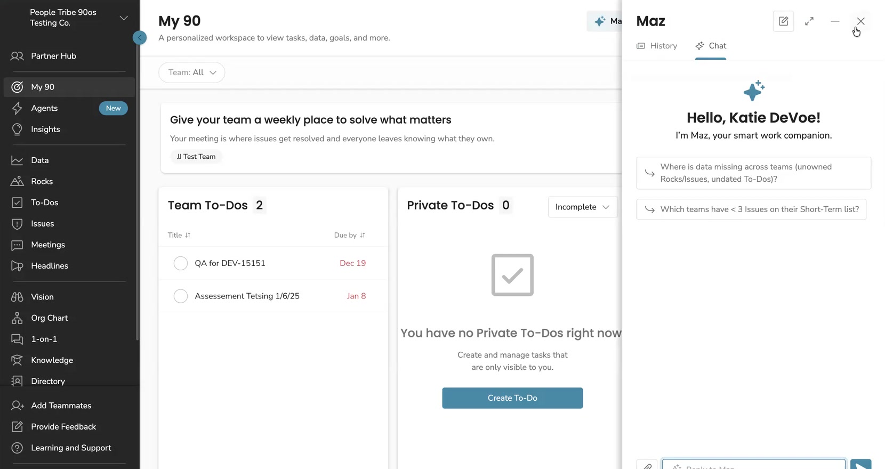

Keep the context.
Maz understands the current page and what the person is doing.
Ninety / Design systems & core product
I was the sole designer responsible for Terra, Ninety’s first unified design system, partnering with engineers on implementation. As Staff Product Designer, AI & Design Systems, I continue to evolve it through the app itself: a clearer navigation, a shared page shell, and a contextual Maz experience.

The problem
Maz opened over the app and covered information. It wasn’t aware of the current page, and navigating away closed it instead of keeping the conversation available. Meanwhile, a long navigation and independently built page toolbars made the product harder to learn.
I redesigned the experience and the shared components together. Navigation, global controls, page controls, and AI assistance each needed a clear home.

Open either image to inspect it at full size.
The experience change
I moved Maz into a collapsible panel on the right. The redesigned experience keeps the current conversation available as people navigate, understands where they are in the app, and can give the page its space back when they need it.
Silent excerpts showing the change from overlay to docked panel. Use the video controls to play or inspect each flow.
Maz understands the current page and what the person is doing.
Moving around the app shouldn’t mean starting the interaction again.
Collapse the copilot when the task needs the full content area.
Shared page architecture
I created a new left navigation, Global Top Bar, Page Header, and Filter Bar. The top bar holds the shared team setting, notifications, and Create. Search lives in navigation. Page headers stop repeating global controls and follow one hierarchy: title, page actions, tabs, then filters and view actions.
The header responds to its own available width, including the space left when Maz is docked—not just the size of the browser.
A description of the work on this page.
Large · 960px and up: page actions, filters, and view actions remain visible.
An explanatory diagram of the component’s layout rules.
Actions and filters remain visible as buttons.
Actions move into overflow. Filters stay in the row.
The description hides. Filters and actions use compact entry points.
After about 96px of scrolling, the header collapses to one row with the title, tabs, Filters, and overflow. It expands on the way back up. The collapse only applies when there is enough content to scroll, avoiding a flickering layout.
The reusable pieces
The shell is supported by component work: simplifying button properties, defining compact and full-width behavior, aligning states, and documenting how components behave when space changes.
Crops from my current Figma component sheet. Choose a treatment to inspect the actual variants, or open the full sheet.
The Side Navigation guidelines cover anatomy, group behavior, themes, rail flyouts, short-window scrolling, keyboard access, and update history. They also separate responsibilities: navigation holds places; the top bar and page header hold actions.
I audited Storybook and live product patterns to define pagination states and behavior below 600px. Details Sheet and Bottom Sheet became separate components with a shared content slot; the layout also specifies when Maz must hide because two panels cannot fit.
Storybook’s Terra section is the implementation source of truth. I aligned components with existing tokens, recorded remaining Chip and Switch mismatches, and separated visual guidance from product requirements and implementation notes.
I proposed a dedicated purple ramp for Maz instead of inheriting each customer’s brand color. Engineering implemented the token. Its AI-only use lives in the guidelines; Terra does not yet have a semantic alias layer.
I corrected failing button labels and icons using existing tokens. Terra’s existing focus ring was documented as failing the 3:1 non-text contrast requirement; a consistent system-wide replacement remains outstanding.
What changed
The redesign gives the app a consistent answer to questions that used to be resolved page by page: where a team change belongs, how filters relate to actions, and what happens to the page when Maz opens. Those decisions now live in shared components and guidance.
As the sole designer responsible for Terra, I used the shell redesign to connect the system to everyday product work. Maz’s panel exposed a layout problem; solving it meant defining how the page header, navigation, and content share space. The product experience shaped the component rules, and those rules can now support other pages.
Engineering review also changed the design. I removed the navigation’s width animation when it became clear that rows would reflow awkwardly during the transition. That was a useful tradeoff: preserve a stable reading experience rather than animate every change.
The next test is whether this structure holds up across complete workflows: finding a tool, changing pages with Maz open, and recovering space without losing access to page controls. The prototype makes those questions concrete enough to evaluate with users and engineers.
See Terra in the Agents experienceThe shell and Maz redesign shown here are prototype work. Component releases and production implementation are tracked separately; post-release usability results are not yet available.